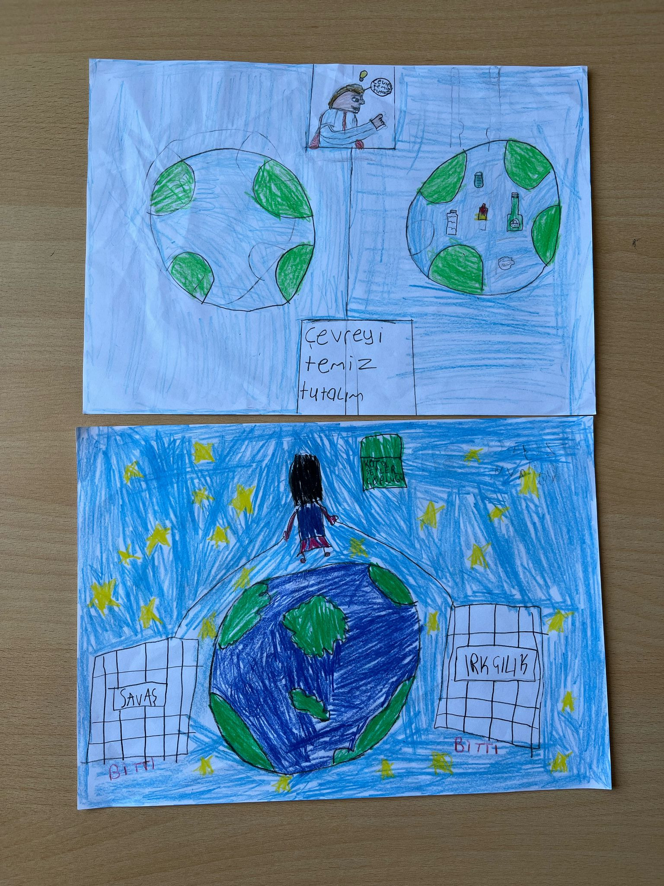

Welcome to Page 1: Discover amazing arts of child.
Page 1: Art Competition
Art Competition of Child
We asked the children to draw a picture in which they consider themselves superheroes, and here are the creative ideas that came up.
Actually, we wanted to choose a winner from all these pictures, but we declared them all winners because we liked all of the pictures very much.

Page 2 continues your journey with interesting world-famous event!
Page 2: Cheese Rolling
CHEESE ROLLING
Dear readers, today we would like to tell you about an extraordinary event. Did you know that there is a competition where a wheel of cheese reaches speeds of 100 km/h and rolls down the hill faster than the people chasing it?
Cheese rolling is a world-famous and unusual event with centuries-old roots, traditionally held each year at Cooper’s Hill in Gloucestershire, England. At the heart of the competition lies a large wheel of cheese—typically a hard, round Double Gloucester weighing around 3 to 4 kilograms—that is rolled down a steep hill, with participants chasing after it all the way to the bottom. The downhill course is grass-covered, uneven, full of holes, and extremely slippery. This makes it nearly impossible for participants to run in a straight line; most of them end up tumbling, falling, or rolling their way down rather than descending in a controlled manner. The cheese can reach incredibly high speeds within seconds—up to 100 km/h—making it virtually impossible to catch. However, the goal of the race isn’t to catch the cheese itself, but to reach the bottom of the hill as quickly as possible alongside it. The event is held in multiple rounds, separately for men and women, and the winner of each round takes home the actual rolling cheese as a prize.
Although the event may seem fun and entertaining, it can lead to serious injuries. During the race, participants often suffer from broken bones, sprains, and head injuries, which is why ambulances and medical teams are stationed at the bottom of the hill throughout the event. Most racers do not wear any protective gear; some show up in running shoes, while others race completely barefoot. Every year, hundreds of people register to take part in the race, while thousands of spectators—including both locals and tourists from around the world—gather to witness the spectacle.
While the exact origins of the race remain unclear, written records date back to the 1800s. It is widely believed that the event has roots in ancient Pagan rituals, symbolizing the arrival of spring and the renewal of nature. Over the years, the cheese rolling race has gained international fame, inspiring similar events in various parts of the world.
In Turkey, however, such races are not officially common. Occasionally, playful, small-scale versions are organized during local celebrations, village festivals, or as humorous content for social media. These lighthearted events typically use foam or plastic props instead of real cheese, focusing on entertainment and comedy. Although the more intense, physically demanding versions of the race are not held in Turkey, the idea of cheese rolling continues to capture the public’s imagination with its visual appeal and cultural uniqueness.
Test your knowledge with our interesting quiz.
Quiz
1. When was Mor ve Ötesi formed?
2. Who is the lead vocalist of the band?
3. Which Mor ve Ötesi song represented Turkey in Eurovision 2008?
4. Which of these albums made a huge impact in the Turkish rock scene?
5. What genre is Mor ve Ötesi most known for?
6. What does the band name "Mor ve Ötesi" symbolize?
7. What kind of themes are often found in their lyrics?
What is Harun Tekin’s academic background?
Check your answers and track your progress here.
Answers
1: C ✅ 2: B ✅ 3: C ✅ 4: D ✅ 5: B ✅ 6: C ✅ 7: B ✅ 8: D ✅
Page 5 explores the brave new world of AI and digital assistants!
INTERESTING FACT
👉 Imagine this: a chicken and a whale are actually very distant cousins! If we could travel hundreds of millions of years back in a time machine, we’d see their common ancestor — an ancient fish-like vertebrate. This creature couldn’t fly or rule the oceans, but over time, evolution transformed it into both the chicken of the skies and the giant whale of the seas.
COMMON MISCONCEPTIONS
"Polar bears are white." 👉 Their fur is actually transparent. They appear white because their fur reflects visible light.
"Shaving makes hair grow back thicker." 👉 Hair may feel coarser after shaving, but it doesn’t grow back faster or thicker.
"Antibiotics kill viruses." 👉 Antibiotics are only effective against bacteria, not viruses.
"Vikings wore horned helmets." 👉 That idea came from 19th-century opera costumes — not history!
"Butterflies live for only one day." 👉 Many butterflies live for weeks or even months!
Page 6 showcases the power of teamwork and collaboration!
Page 6: Elvis Presley
The King of Rock and Roll
Who was Elvis Presley?
Elvis Aaron Presley was born in Mississippi on January 8, 1935, the first child of a mother who sewed and a father who worked in the fields.
The family actually had twins, but Elvis' twin, Jessie Garon, was unfortunately born dead.
Elvis' infancy, childhood and early teenage years were marked by poverty and tragedy as he lived in a two-room house built by his father Vernon.
Elvis and his mother Gladys struggled financially, especially after Vernon was imprisoned.
As debts grew, they lost their home and moved in with relatives, continuing to live in poverty.
Early Years of His Life
Despite their struggles, Elvis’ childhood was filled with love. His passion for music began when his mother gave him a guitar for his birthday.
He performed at school, fairs, and competitions, gaining early recognition with the country classic "Old Shep."
Though he started with country, he later embraced blues and jazz, which shaped his distinctive style.
After high school, he pursued a musical career by contacting various record labels, marking the beginning of his journey as a performer.
Elvis Presley: Whose Life Changed with Jazz and Blues
Elvis’ big break came when he visited Memphis Recording and Sun Recording studios to record "My Happiness" and "That's When Your Heartaches Begin."
Record producer Sam Phillips recognized his potential and helped him record “That’s All Right” on June 5, 1954.
The song became a local hit. His first national number one hit was "Heartbreak Hotel", which sold over 1 million copies and stayed on the charts for 8 weeks.
This success quickly turned Elvis into a national star.
Personal Life and Death
Elvis married Priscilla Ann on May 1, 1967, and became a father on February 1, 1968.
However, their marriage ended in divorce in 1973. The 1970s were challenging for Elvis; his health deteriorated, and he gained weight rapidly.
In 1977, he released his final album “Moody Blue.” On August 2, 1977, he was found unconscious by his girlfriend Ginger Alden.
Elvis was taken to the hospital but could not be saved.
Though he passed away, the legacy of Elvis Presley — one of the most iconic performers in history — lives on.
Page 7 celebrates cultural diversity and global understanding!
Page 7: Celebrating Culture
🌼 PROVERB OF THE WEEK
“Every spring has its flower, every wish has its time.”
🔥 HIDIRELLEZ
Every year on the evening of May 5th, there’s a joyful commotion… Because by the morning of May 6th, spring is officially declared open!
Drums echo, hearts dance with joy, and people say: “Hıdırellez is here!”
Winter has gone, nature has awakened, and it’s believed that the prophets Hızır and İlyas have finally met — bringing abundance, health, luck, and blessings to the world!
🌠Legend says:
Hızır helps those on land, İlyas helps those at sea. When they meet, Hıdırellez is celebrated — sky and earth rejoice!
✨ How to Make a Wish (The Hıdırellez Way!)
Write your wish on paper — like “a house,†“a car,†“love,†or “a job”.
Place it under a rose bush (roses bloom where Hızır touches!).
Before sunrise, collect the wish. Or toss it into the sea (depends on region).
Bonus: Some people build tiny models of their wishes — a mini house, car, etc. Like Legos, but magical!
🔥 What Else Happens on Hıdırellez?
Fire jumping: 3 jumps, 1 wish. Some whisper their wish 40 times while jumping!
Festivals: In Edirne and Kırklareli, people dance all night and bathe in the Tunca River at dawn for good luck.
Feasting outdoors: Börek, dolma, köfte, helva — eaten while sitting on the grass, laughing under the sky.
💫 A Little Secret:
If you see a shooting star on Hıdırellez night, your biggest wish may come true. It costs nothing to try — just make a wish!
Dire Wolves Are Back to Life.
Bringing Dire Wolves Back to Life
Dire wolves (Canis dirus), which went extinct approximately 12,700 years ago, were a large and powerful species of canine that live in North and South America during the last Ice Age.
In 2025, Colossal Biosciences produced three pups through genetic engineering and cloning of gray wolves to resemble dire wolves.
These pups were named Romulus, Remus, and Khaleesi.
However, these animals are not true dire wolves; they are genetically modified gray wolves. Although the company presents this project as a scientific achievement, experts often view these efforts as a show.
Differences Between Ancient and Modern Dire Wolves
Feature
Ancient Dire Wolves (Canis dirus)
Modern Gray Wolves (Canis lupus)
Size
Larger and more muscular
Smaller and leaner
Fur Color
Generally white
Various colors
Jaw Structure
Stronger and wider
Thinner and longer
Habitat
North and South America
Widespread across the globe
Social Structure
Pack hunters
Diverse social structures
Genetic Diversity
High
Lower
About Romulus, Remus, and Khaleesi
Romulus and Remus: Male pups born on October 1, 2024. Their names reference the legendary twin founders of Rome.
Khaleesi: A female pup born on January 30, 2025. Her name is a reference to the character Daenerys Targaryen from the “Game of Thrones†series.
These pups live on a 2,000-acre protected area in the U.S., designed to mimic their natural habitats, and are being raised under veterinary supervision.
Another Project by This Company: Woolly Mammoth
Led by: Colossal Biosciences
Goal: To create a “mammoth-like species†by hybridizing the extinct woolly mammoth with the Asian elephant.
Criticism:
Only a mammoth-like animal is being created, not a real mammoth.
It is unclear where this new mammoth-like species will live.
Ecological Balance Issues
Introducing cloned species into natural ecosystems, may cause imbalances.
Large predators like dire wolves, if reintroduced, could threaten the lives of current species.
Check your answers and track your progress here.
Answers
1: B ✅ 2: A ✅ 3: B ✅ 4: C ✅ 5: D ✅ 6: A ✅ 7: B ✅ 8: C ✅ 9: A ✅ 10: D ✅ 11: A ✅ 12: C ✅ 13: D ✅ 14: B ✅ 15: C ✅